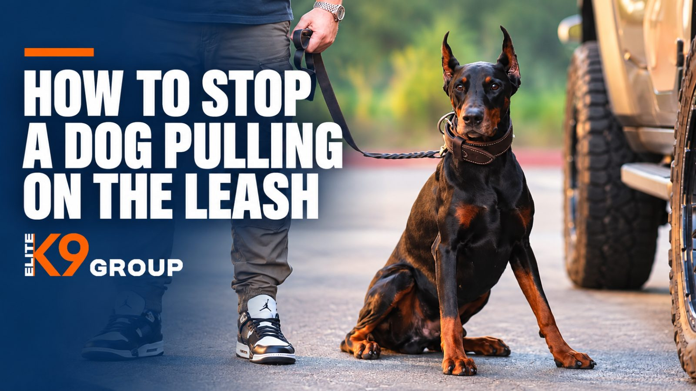

A walk with your dog should be enjoyable, not a constant struggle to keep your balance. But when your dog pulls toward every tree, person, or passing animal, even a short neighborhood walk can become frustrating. If you're wondering how to stop a dog pulling on the leash, the key is teaching your dog that staying close and keeping the leash loose leads to good things. Start in a quiet environment, reward the walking behavior you want, and gradually introduce distractions as your dog improves. Whether you're walking through Sherman Oaks or navigating busier Los Angeles sidewalks, consistent leash training can make everyday outings easier and more comfortable for both you and your dog. Why Do Dogs Pull on the Leash? Before correcting the behavior, it helps to understand why it happens. Dogs naturally explore the world through their noses. On a walk, interesting smells, moving objects, unfamiliar people, and other animals can quickly capture their attention. Some of the most common reasons for leash pulling include: Excitement and curiosity: Your dog wants to reach something interesting as quickly as possible. Different walking speeds: Dogs often prefer moving faster than their owners. Learned behavior: If pulling has successfully brought your dog closer to an interesting smell or destination, the behavior may continue. Lack of leash training: Dogs don't automatically understand how to walk comfortably beside a person. Stress or overstimulation: Some dogs pull because they feel nervous, frustrated, or overwhelmed by their surroundings. For example, imagine your dog spots another dog across the street. If pulling gets them closer to that dog, they may learn to repeat the behavior during future walks. Importantly, a dog pulling on the leash isn't necessarily aggressive, dominant, or deliberately disobedient. Understanding the motivation behind the pulling makes it easier to choose the right training approach. How to Stop Your Dog From Pulling on the Leash: Step-by-Step Training Teaching loose-leash walking requires repetition, patience, and clear communication. The following steps can help your dog understand what you expect during walks. 1. Choose the Right Leash and Harness Start with equipment that allows you to manage your dog comfortably and safely. A properly fitted harness can help distribute pressure across the body rather than concentrating it on the neck. For dogs that pull strongly, a well-fitted front-clip harness may offer additional handling support, although it won't teach loose-leash walking by itself. A standard fixed-length leash, typically around four to six feet, gives you practical control during training. Avoid retractable leashes for initial loose-leash practice. Their changing length and constant tension can make it harder to communicate when the leash is actually loose. Check that your dog's equipment fits correctly and doesn't restrict natural movement or cause rubbing. Avoid jerking the leash or using painful corrections. Remember: Equipment can make walking more manageable, but learning comes from consistent training. 2. Start Training Somewhere Quiet If your dog is constantly distracted by traffic, people, or other animals, expecting perfect leash manners immediately is unrealistic. Begin in your home, backyard, or another quiet space. With your dog on a leash, take a few steps. When your dog remains nearby and the leash stays relaxed, reward them with a small treat or verbal praise. Repeat this over short distances before increasing the difficulty. For Los Angeles dog owners, a quiet residential sidewalk during a less busy hour may be a better starting point than a crowded park. Common mistake: Starting in a highly distracting location before your dog understands the exercise. 3. Reward Your Dog for Walking With a Loose Leash Dogs learn more effectively when they understand which behaviors lead to rewards. When your dog walks near you without tightening the leash, immediately praise and reward them. You can use small treats, a favorite toy, or permission to explore an interesting smell as rewards. At first, reward frequently. You might reward after just one or two successful steps. As your dog becomes more consistent, gradually increase the number of steps between rewards. Keep the reward close to your side so your dog learns that walking in your general area is worthwhile. Your dog doesn't need to maintain a formal heel position throughout every casual walk. The goal is a comfortable, relaxed leash without constant pulling. 4. Stop Walking When the Leash Becomes Tight One practical technique for dogs that pull on the leash is to stop forward movement whenever the leash tightens. Here's how it works: Walk forward while the leash is loose. If your dog moves ahead and creates tension, stop walking. Wait for your dog to turn toward you or move back enough to loosen the leash. Reward that response and continue walking. Avoid pulling your dog backward or using sharp leash corrections. Over time, your dog can learn that pulling doesn't get them to their destination faster, while walking with a relaxed leash allows the walk to continue. Consistency matters. If you sometimes stop but other times allow your dog to pull you toward something exciting, the lesson becomes confusing. If you need to move away from traffic or another hazard, prioritize safety rather than continuing a training exercise. 5. Teach Your Dog to Pay Attention to You One reason dogs pull is that their surroundings become more interesting than their handler. Building engagement can help. Practice saying your dog's name in a quiet environment. When they look toward you, reward them immediately. Once this becomes reliable, use the same exercise during walks. You can also teach a simple cue such as "Let's go" to signal that you're about to move together. Try rewarding your dog for voluntarily checking in with you, even before you give a cue. This encourages your dog to stay aware of your position while still enjoying the surroundings. Common mistake: Repeating your dog's name continuously when they're too distracted to respond. Instead, increase your distance from the distraction and try again. 6. Practice Changing Directions If your dog constantly rushes ahead, gentle direction changes can encourage them to pay more attention to your movement. Begin walking in one direction. Before your dog reaches the end of the leash, use a cheerful cue and turn toward another direction. Reward them when they follow and catch up with you. Practice smooth turns rather than sudden movements or leash jerks. You can turn this into a short, engaging exercise with several changes in direction. The objective isn't to confuse your dog. It's to teach them that staying aware of your movement makes walking together easier. 7. Gradually Add Real-World Distractions Once your dog can walk calmly in a familiar space, gradually practice in more challenging environments. Start with a quiet neighborhood street, then move toward locations with moderate pedestrian activity or distant dogs. For example, a dog living in Sherman Oaks might practice on a residential sidewalk before attempting a busy walking route near Ventura Boulevard. Maintain enough distance from distractions that your dog can still respond to you and take rewards. If they begin pulling repeatedly, barking, or ignoring familiar cues, the environment may be too difficult for their current skill level. Move farther away, simplify the exercise, and reward small improvements. Progress is more reliable when distractions increase gradually rather than all at once. A Simple Five-Minute Leash Training Routine You don't need to turn every walk into a lengthy training session. Try this beginner routine: Minute 1: Reward your dog for responding to their name and paying attention. Minute 2: Practice walking a few steps on a loose leash. Minute 3: Stop when the leash tightens, then reward your dog for returning to a relaxed position. Minute 4: Practice gentle direction changes with a familiar cue. Minute 5: Finish with a short, successful walk and allow some relaxed sniffing. If your dog becomes frustrated or overwhelmed, finish earlier with an easier exercise. Short, regular practice sessions are often more productive than one long, difficult session. Common Mistakes That Make Dogs Pull Harder Even when owners understand how to train a dog not to pull on the leash, a few everyday mistakes can slow progress. Allowing Pulling Sometimes If your dog learns that pulling occasionally works, the behavior may persist. Try to apply the same loose-leash expectations during practice walks. Training in Distracting Environments Too Soon A dog that performs well inside the house may struggle beside a busy Los Angeles street. Build skills gradually instead of expecting immediate success everywhere. Rewarding Too Late Timing is important. If your dog walks calmly for several steps but receives a treat only after lunging forward, the reward may not reinforce the behavior you intended. Reward while the leash is actually loose. Relying Only on Equipment Changing harnesses or leashes may improve handling, but equipment alone cannot replace consistent training. Expecting Immediate Results Dogs that pull on the leash may have practiced the habit for months or years. Meaningful improvement takes repetition. Focus on small progress, such as walking a few additional steps without tension, rather than expecting a perfectly calm walk overnight. What If Your Dog Pulls Toward Other Dogs or People? Not all leash pulling comes from excitement. Some dogs become highly focused on other dogs, strangers, bicycles, or moving vehicles. They may bark, lunge, freeze, or show signs of discomfort. This behavior can involve excitement, frustration, fear, or leash reactivity. For example, a dog that desperately wants to greet another dog might pull and bark out of frustration. Another dog displaying similar behavior might actually be frightened and trying to create distance. These situations require different approaches. If your dog regularly lunges or reacts intensely, avoid forcing close encounters. Give them space, choose quieter routes, and reward calm engagement at a manageable distance. Sudden behavioral changes should also be discussed with a veterinarian, particularly if discomfort or pain may be contributing. For persistent reactivity or fear-related behavior, a qualified professional can help assess what triggers the response and recommend an appropriate plan. Elite K9 Group offers Behavioral Modification Dog Training in Los Angeles for concerns including reactivity, fear-based responses, excessive barking, and uncontrolled leash behavior. How Long Does It Take to Train a Dog Not to Pull? There's no universal timeline for teaching loose-leash walking. A young puppy beginning leash training may have different needs than an adult dog that has spent years pulling toward interesting destinations. Several factors affect progress, including your dog's age, previous training experience, level of distraction, consistency, and emotional response to the environment. Some dogs begin showing improvements during early practice sessions, while dependable behavior in busy settings may require considerably more work. Rather than measuring success only by time, pay attention to practical changes. Is your dog checking in more often? Can they walk farther without tightening the leash? Are they recovering more quickly after noticing a distraction? These improvements indicate that your training is moving in a useful direction. Can Professional Dog Training Help With Leash Pulling? While many owners can teach basic loose-leash walking at home, professional instruction can be valuable when progress stalls or leash behavior becomes difficult to manage. A trainer can help identify why your dog pulls, demonstrate appropriate handling techniques, and develop exercises suited to your dog's needs. Professional support may be especially helpful if your dog: Pulls strongly enough to make walks physically difficult. Becomes distracted and stops responding to familiar cues. Frequently lunges toward dogs, people, or moving objects. Shows fear, anxiety, or excessive excitement during walks. Has not improved despite consistent practice. Elite K9 Group's Dog Obedience Training in Los Angeles focuses on leash manners, reliable commands, attention, and controlled behavior in real-world environments. The training process begins with an evaluation to better understand the individual dog's behavior and needs. For owners searching for a dog training course near me, the most useful option is one that addresses their dog's actual challenges rather than applying the same approach to every animal. Clear communication between the dog, trainer, and owner is an important part of developing better everyday habits. Dog Training in Sherman Oaks and Los Angeles Walking a dog in Los Angeles can involve frequent distractions, from busy sidewalks and passing dogs to bicycles, traffic, and unfamiliar environments. For owners struggling with these situations, individualized training guidance can help make everyday walks more manageable. Located at 13238 Riverside Dr, Sherman Oaks, CA 91423, Elite K9 Group provides obedience training and behavioral modification services for dog owners throughout Los Angeles and surrounding communities, including Studio City, Burbank, and other parts of the San Fernando Valley. Whether your dog needs foundational leash manners or support with more complex behavioral challenges, the first step is understanding the cause of the problem. You can request a free behavior consultation to discuss your dog's leash-pulling behavior and explore suitable training options. For additional dog training content and updates, follow Elite K9 Group on Instagram. Frequently Asked Questions How Do I Get My Dog to Stop Pulling on the Leash? Start by rewarding your dog whenever the leash is relaxed. Stop forward movement when the leash tightens, and resume when your dog returns to a loose-leash position. Begin in a quiet location and gradually practice around distractions. Why Does My Dog Pull Harder When It Sees Other Dogs? Your dog may be excited, frustrated, frightened, or reactive. Observe their body language and avoid forcing interactions. Practicing at a comfortable distance can help your dog learn to stay engaged with you. Strong or persistent reactions may require professional behavioral guidance. Can Older Dogs Learn Loose-Leash Walking? Yes. Adult and senior dogs can learn new walking habits, although established behaviors may take additional time to change. Keep practice manageable, account for any physical limitations, and maintain consistent expectations. Is a Harness or Collar Better for a Dog That Pulls? A properly fitted harness is often a practical choice, particularly for strong pullers, because it can reduce pressure on the neck. However, the fit, design, and individual dog's needs matter. Neither a harness nor a collar replaces training. How Often Should I Practice Leash Training? Short, regular sessions are a useful starting point. Even five minutes of focused practice can help reinforce loose-leash walking. Increase duration and difficulty gradually as your dog becomes more comfortable with the exercises. When Should I Contact a Professional Dog Trainer? Consider professional help if your dog is difficult to control, pulls persistently despite training, or shows intense barking, lunging, fear, or aggression during walks. A professional can help determine whether basic obedience instruction or a more individualized behavior plan is appropriate. Make Walks More Enjoyable for You and Your Dog Learning how to stop your dog from pulling on the leash isn't about forcing them to walk perfectly beside you every second. It's about building communication, rewarding good habits, and helping your dog understand how to move comfortably with you. Start with manageable expectations, practice consistently, and gradually introduce more challenging environments. Over time, those small improvements can make walks more relaxed and enjoyable. If leash pulling is making everyday outings difficult, Elite K9 Group offers professional obedience and behavioral training options in Sherman Oaks and the greater Los Angeles area. Request Your Free Behavior Consultation and take the next step toward better leash manners and more comfortable walks.
